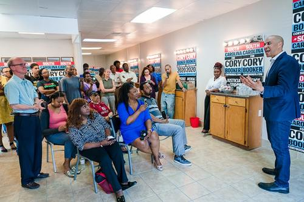
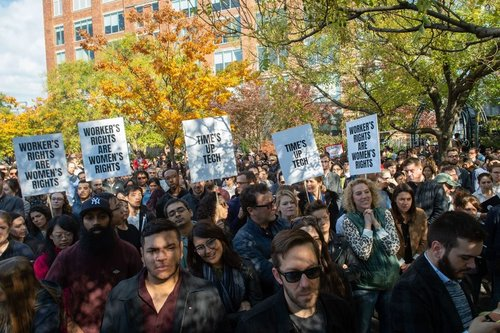
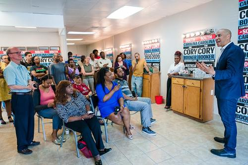
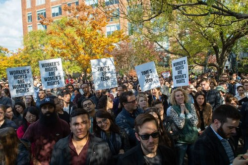

Donna Mendoza
As an undergraduate student at the University of California at Riverside, I have made it my goal to obtain as much experience as possible within the legal field. As a result, I joined the Mock Trial Team at UCR in efforts to understand the judicial process on a more personal level. By being in this club I learned a lot of new tactics aimed at revealing the truth, being a convincing speaker, and creating doubt within a group of people. Learning these tactics are an integral part of having the skills to be a lawyer, paralegal, or aide to any and all U.S. Senators or Representatives. In addition, being a member of the legal and political community is one of my main goals in life. As an individual, I believe it is an utmost duty of every and all individuals to have the utmost respect for the legal systems that govern the United States. Understanding the differing mechanical parts of the democratic institutes that comprise the country we live in is essential in appreciating and critiquing the separation of powers within our great nation.
In addition to my experience with the Mock Trial Team, I find great joy in freely exercising my right to free speech, especially concerning my political beliefs. As an individual, I take great pride in speaking my mind and taking a hard look at the facts when difficult situations occur. Through my political beliefs, I am capable of demonstrating who I am. As a result of my great respect for the First Amendment, I joined the College Democrats at UC Riverside Club in efforts to meet other people who have a similar political likeness to myself. Despite my political affiliations, I am incredibly skilled in civil discourse and have the utmost respect for the opinions of others. I find great joy in listening and understanding the different perspectives other individuals have. It is beneficial as a person and as a member of society when any of us are capable of putting ourselves in another person’s shoes in order to gain a better understanding of who we are and who comprises the world in which we live. Therefore, I have learned as an individual that situations arise in which we have no power and on the contrary when situations depend on our sole decisions. This has lead me to increasingly value the power in which we have to help one another. No one in this world can make it on our own. In my personal philosophy of life, I emphasize our abilities to come together and create substantive change.
Lastly, I greatly appreciate the people around me who are incredible in personality but generous in their efforts. Wherever life may take us, I know whoever is around me will be an individual who is kind and caring. Throughout my life, I have seen the ins and outs of difficult situations and have found unique ways in solving those problems. In my efforts to be a part of the political community I will utilize my optimize in efforts to create a better world for all.
Experience
Prosecutor
• Created mock depositions
• Questioned witnesses and going over facts
• Created descriptive trial plans and multiple defense strategies
Member
• Responsible for recruiting new members
• Debated policy strategies
Student Educator
• Educating young, underprivledged boys and girls about their education endeavors
• Discovered and applied young boys and girls to leadership oppurtunities
• Educated young children about the importance of receiving a higher education
• Educated young children about their financial oppurtunities
Education
Univeristy of California Riverside
La Puente High School
University of California Riverside
Portfolio
.jpg)
.jpg)
.jpg)
.jpg)



